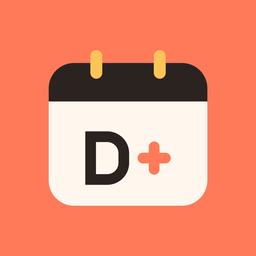

만난 지 며칠? D+로
사람마다 마지막으로 만난 날, D+일수, 지금까지 만난 횟수를 보여줘요. 오래 못 본 순·최근 순·이름 순 정렬과 초성 검색도 돼요.

만난 날을 기록하면 사람마다 D+로 세어 줘요. 오래 못 본 사람이 누구인지 한눈에 보이니까, 먼저 연락하기가 쉬워져요.
iPhone App Store와 Google Play 출시를 준비하고 있어요. 다운로드 링크는 출시 후 이 페이지에서 안내합니다.
이렇게 써요
사람마다 마지막으로 만난 날, D+일수, 지금까지 만난 횟수를 보여줘요. 오래 못 본 순·최근 순·이름 순 정렬과 초성 검색도 돼요.
만난 사람을 여러 명 고르고 오늘·어제·그저께 버튼이나 달력으로 날짜를 골라요. “1개월마다”처럼 주기를 정하면 “만날 때 됐어요”를 알려줘요.
“민수랑 저녁”처럼 캘린더 일정 제목에 이름이 있으면 만남 후보로 찾아 한 번에 기록해요. 기록할 때 캘린더에 일정으로 추가할 수도 있어요.